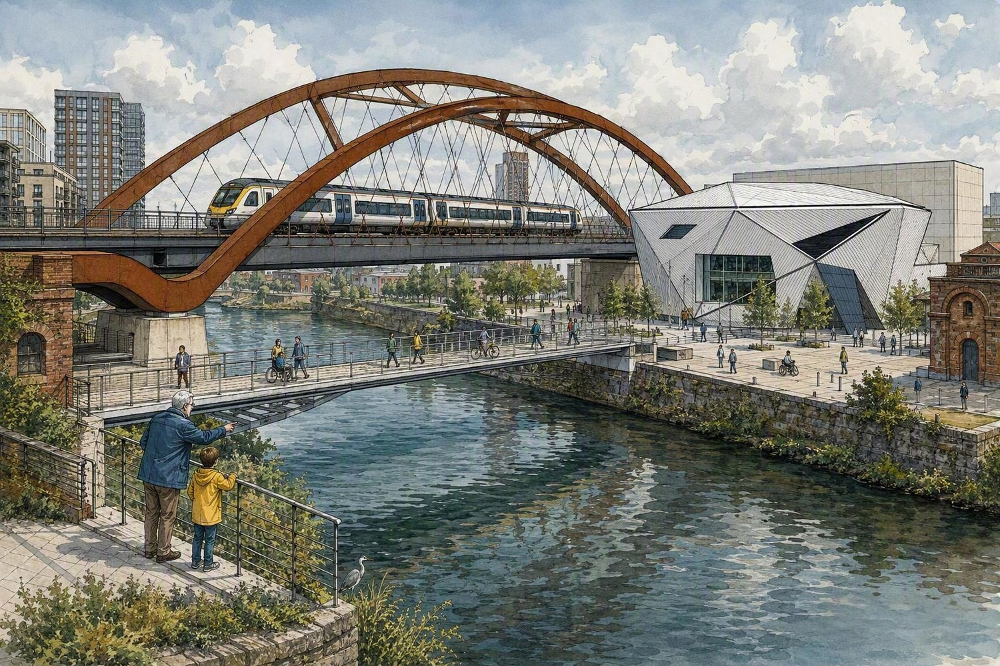

The experience
Follow the river. Hear the city. Join the chorus.
Mancunianity Flows is an immersive audio-theatre journey along the River Irwell, connecting Manchester and Salford through sound, memory and shared movement.
Memories. Music. River. The city we share.
A city you can hear as well as see
Wear a lightweight headphones set and step through the city as history, memory and sound begin to overlap across Manchester and Salford.
Why this quarter-mile?
Follow a transport web almost 200 years in the making
In 1844, French engineer and railway architect Guillaume Henri Dufour was among the many people who helped shape the infrastructure that changed how the two cities connected.
Across the River Irwell, movement and memory still shape the landscape: water, rail, routes, labour, homes, neighbourhoods and daily life.
Follow the spider’s web
Take a little piece of Mancunianity Flows with you
The project is rooted in the visible and invisible links between Manchester and Salford: bridges, routes, lines of work, family memories and public spaces.
Its aim is not to flatten those differences into one story, but to let them speak together.
What happens?
Arrive at Aviva Studios
Arrive 20 minutes before your booked start time and collect your listening support before you begin the route.
Walk the river edge
Follow the route at your own pace, listening as voices, memories and recorded sounds guide the way between both cities.
Gather for the finale
At the end, the experience settles into a short, seated musical finale with space to listen, reflect and join in if you wish.
Water below. Footsteps beside it. Trains overhead.
Three journeys in one view
Around the River Irwell, water, walking and railway movement meet in one extraordinary landscape connecting Manchester and Salford. The experience follows those connections rather than treating history as something sealed behind glass.

The cities get another soundtrack
Listen while you look
Composer and sound artist Dr Simon Knighton is creating the atmospheric sound world carried through the wireless headphones. Simon is an Ivor Novello-nominated composer and Royal Musical Association Tippett Medal winner.
The idea is simple: look at a real bridge while hearing another layer of its story; walk beside the actual river while voices, music and sound alter the way you notice the place.
For a while, Manchester and Salford become the stage.
Can Manchester and Salford sing the same song?
A new chorus beside the Irwell
One of our local Weavers, Tony Easom, 76, is a Salford artist, former ship’s plumber and folk songwriter. His memories of ships, tugs and locomotives, together with original words and music, are helping shape a new Mancunianity Flows song.
Experienced community choir leader Jules Gibb is helping develop the song into something people can enjoy singing together.
We are not looking for a perfect choir. We are creating a chorus people feel welcome to join.
A living river
The Irwell: work, damage, recovery and an unfinished future
The river has long carried commerce, contamination, life and memory. Its future is shaped by how we think about both cities and what they owe to each other.
As custodians of the Irwell corridor, Manchester and Salford need to imagine a healthier public future that includes biodiversity, accessibility, care and pride.
Connecting blue and green spaces
Looking beyond the walk with CyanLines
Mancunianity Flows is part of a wider civic conversation about river restoration, wellbeing and everyday public access.
It is a story about both cities and their shared environmental future: cleaner water, greener routes and a more visible relationship between people and the place they live in.
Illustrated stories
People, work, animals and a river through time
The experience does not pretend that one city’s story explains the whole river. Instead, it brings different voices and places into one shared public narrative.
Ready to follow the river?
Six experiences on 19, 20 and 21 December 2026 at 10:30 and 13:30. Or keep exploring the stories before you book.